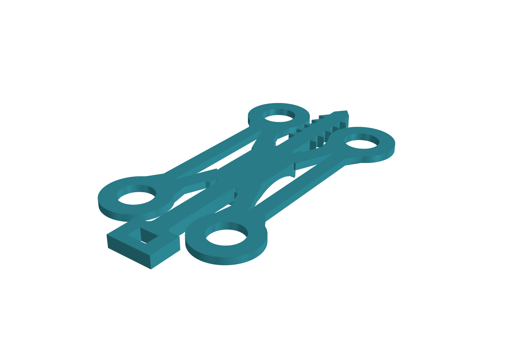
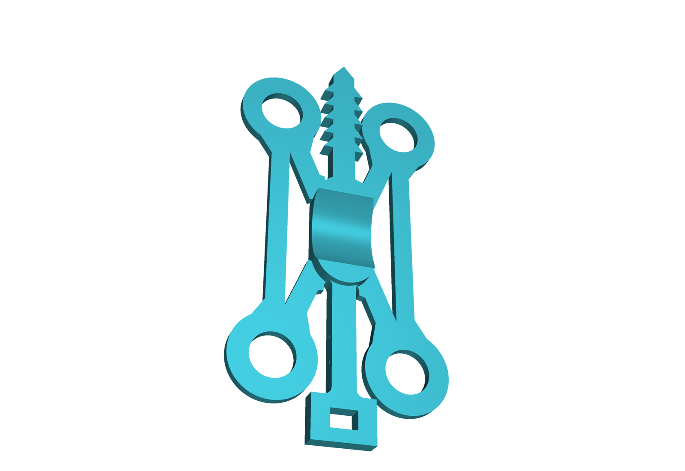
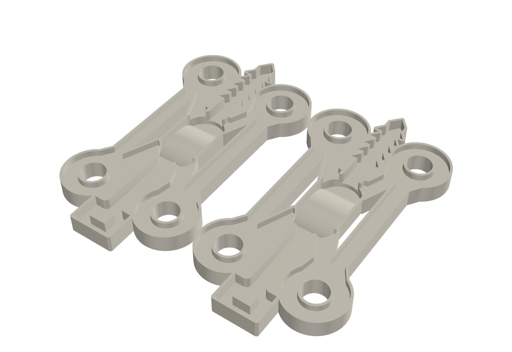
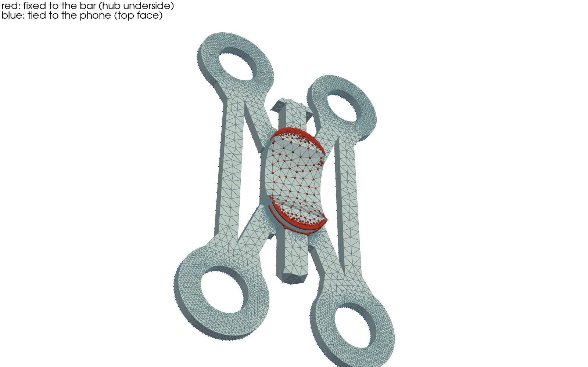
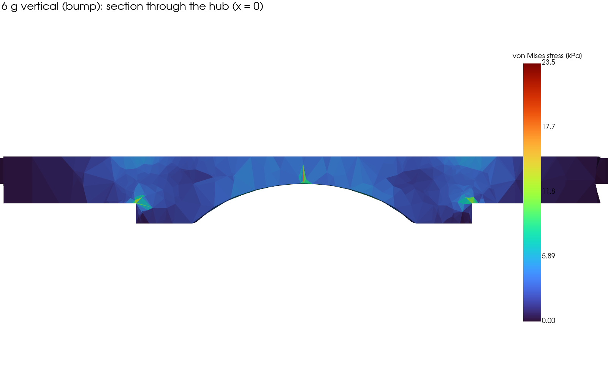
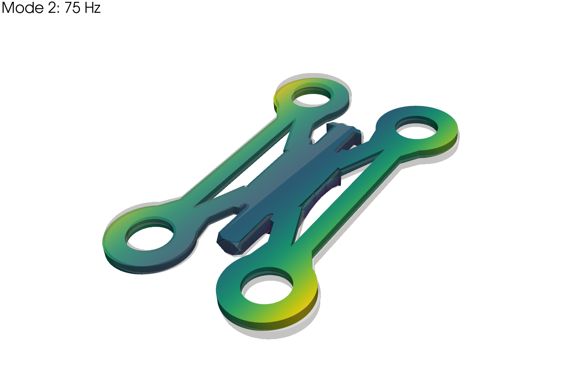
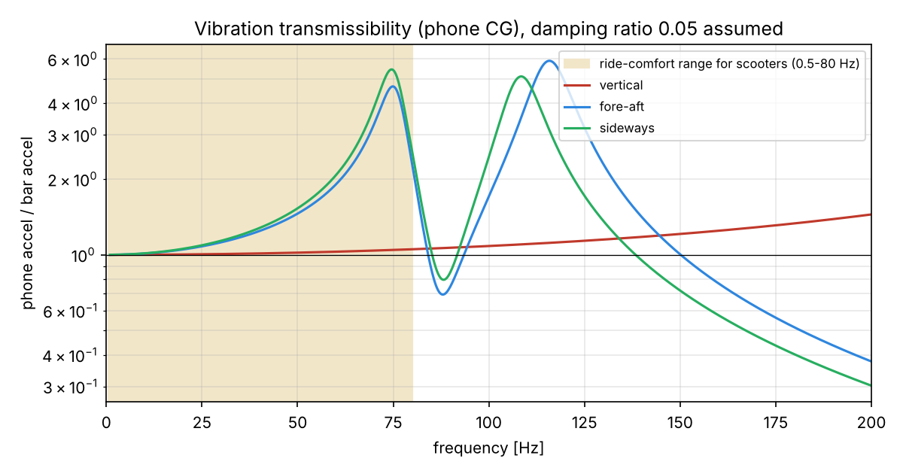

SolidWorks, cast silicone, 3D printed mold. Silicone casting and mold design class.
A one-piece silicone mount that holds my iPhone 16 (in its case) on the handlebar of my Unagi electric scooter. It's cast flat in an open 3D printed tray, then stretched onto the phone and strapped to the bar.

| Size (as cast) | 90 x 176 x 10 mm |
|---|---|
| Volume | 39.4 cm³ (class limit 80 cm³) |
| Mass | about 46 g at a specific gravity of 1.18 |
| Material | platinum-cure silicone, Shore 15-30A |
| Mold | open tray, two cavities, 191 x 179 x 11 mm, PLA |

Top. This side faces the phone.

Bottom. The groove in the hub sits on the bar.

The two-cavity mold tray.
I wanted to know two things: does the silicone survive the loads from riding, and does the mount protect the phone from vibration or make it worse? Apple warns that strong vibration can damage the iPhone camera's stabilization, and recommends a vibration dampening mount even on scooters.

Each case is the phone's and the net's own weight scaled up: 6 g down for hitting a bump (1 g of gravity plus 5 g of shock), 1.5 g forward for hard braking, and 1.5 g sideways. These are design values I picked, not measurements. Results are for E = 1.14 MPa. With softer silicone the stresses stay the same, and the displacements grow by 1.14/0.65.
| Case | Phone moves | Typical stress | Peak stress | Typical strain |
|---|---|---|---|---|
| 6 g bump | 0.012 mm | 35 kPa | 206 kPa | 2.7% |
| 1.5 g braking | 0.044 mm | 31 kPa | 148 kPa | 2.3% |
| 1.5 g sideways | 0.049 mm | 29 kPa | 176 kPa | 2.2% |
"Typical" is the 99.9th percentile over the part. The peak sits right at the edge of the fixed area, where a hard boundary condition makes the stress grow without limit as the mesh is refined, so treat it as an upper bound.

Even the peak stress is less than a tenth of the silicone's tensile strength (about 2.8 MPa), and the strains are about 2-3% against an elongation at break over 300%. Riding loads won't tear it. The real stress in this part comes from stretching it onto the phone, which this linear model doesn't include.
| Mode | Frequency | Motion |
|---|---|---|
| 1 | 30 Hz | phone twists on the hub (about the axis through the screen) |
| 2, 3 | 75 Hz | phone rocks fore-aft and side to side |
| 4, 5 | 108-116 Hz | phone slides fore-aft and sideways |
| 6 | 310-360 Hz | phone moves straight up and down (squeezing the hub) |

To see what the phone feels, I shook the bar and computed the phone's acceleration divided by the bar's acceleration (transmissibility) from the modes, with 5% damping assumed for the silicone:

What this shows:
So as designed it holds the phone securely, but it is not a vibration damper. To make it one, the next version needs a much lower natural frequency: for example, a gap so the phone rides on the arms instead of sitting directly on the hub, or a softer, thinner hub. I can check that with the same model before casting.
The code is in fea/code, and the full numbers are in results.json.